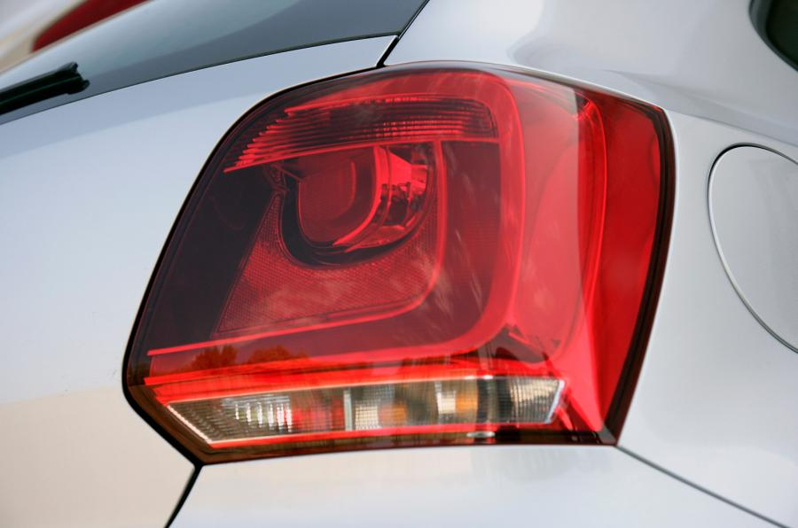

Design and Styling
Viewed from behind, the tail-lights look rather large and dominate the styling
There are few surprises with the Volkswagen Polo. The first discovery that runs true to form is that it is larger than the model it replaces and is now shorter than the Mk2 Golf.
Interior
There's no mistaking which manufacturer is responsible for this: it's typical VW
The extent to which the Volkswagen Polo’s interior impresses depends very much on how you prioritise style and substance.
Performance
At idle and town speeds the Polo is quieter than the Fiesta
The Polo buyer can opt for a 69bhp 1.2-litre three-pot that’s mechanically identical to the 59bhp unit and which, theoretically at least, offers the same fuel economy.
Ride and Handling
Brake hard in the Polo and there’s noticeable dive at the front
The handling of this car is as staid as the cabin.
MPG and Running Costs
The Volkswagen Polo is far from a budget supermini, but it’s not the most expensive, either.
Verdict
The Polo is mature and composed but unexciting
This segment of the market is particularly competitive.